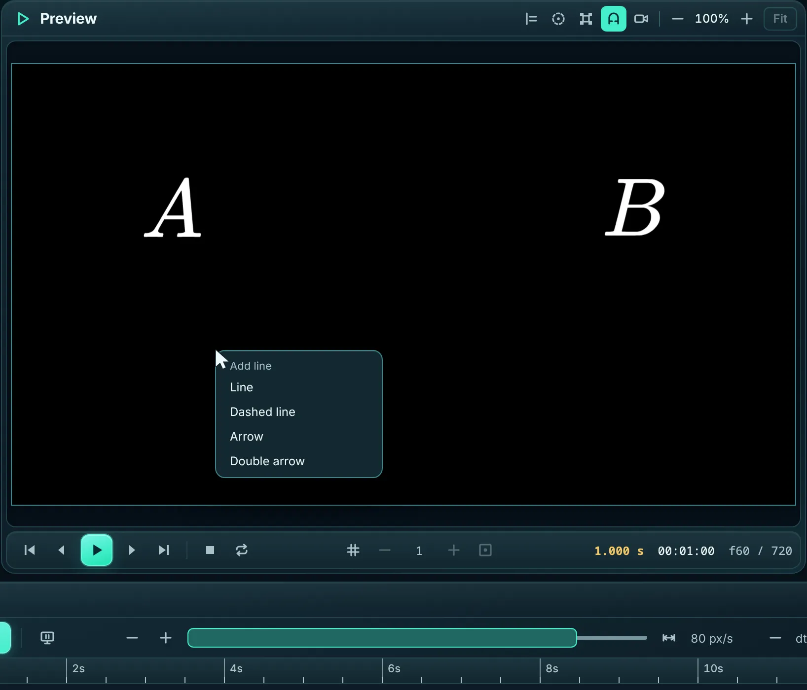
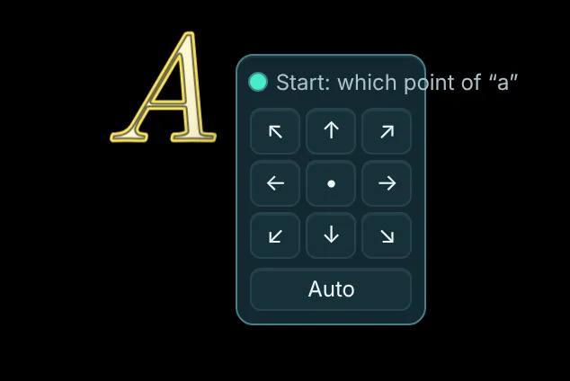
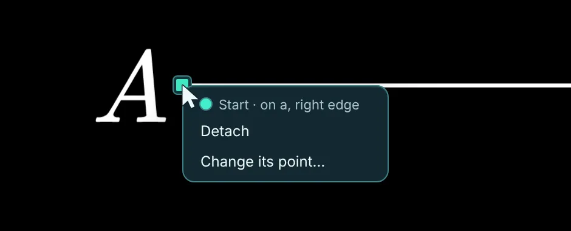
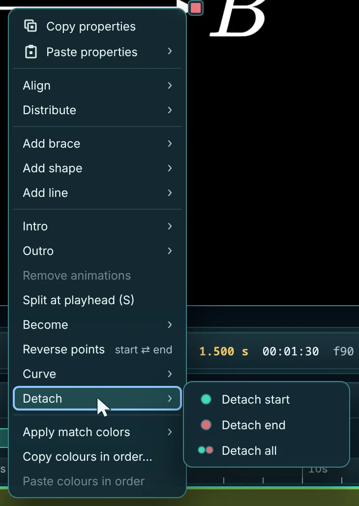
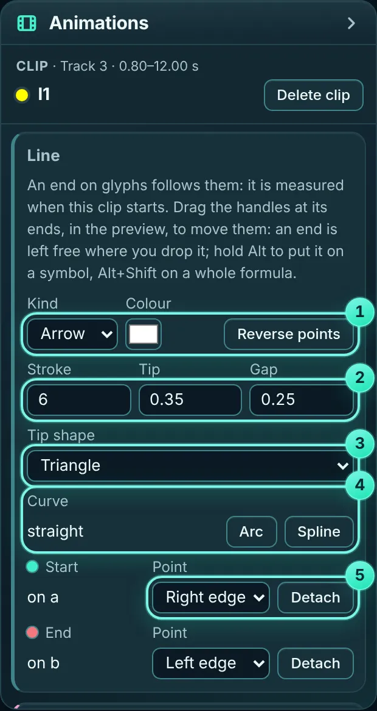
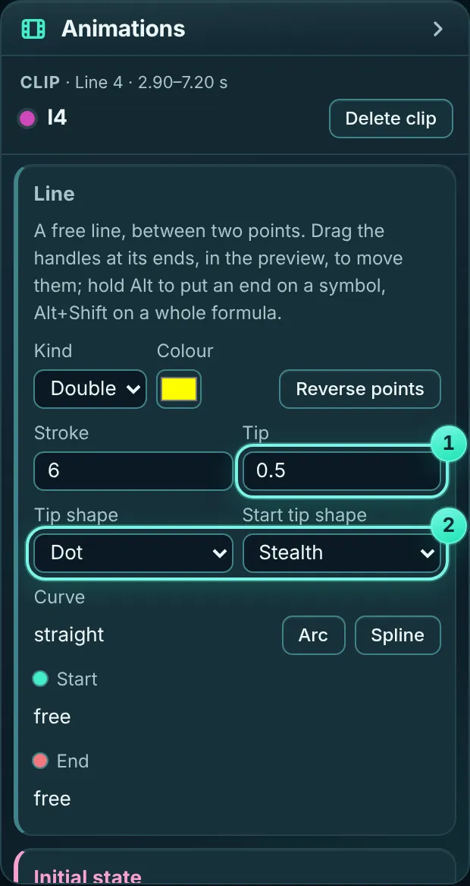
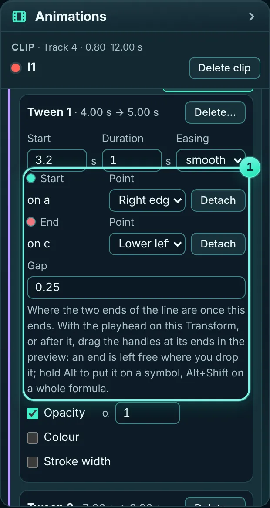
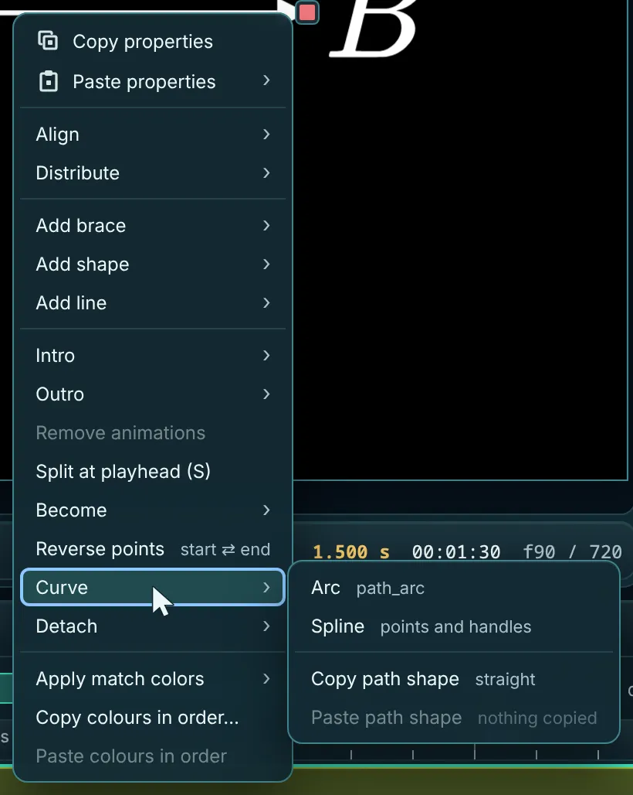

Lines and arrows
A line runs between two ends. Each end is on a formula, or on some of its glyphs, at the point of its box you choose, or free at a point of the scene. You draw one from a formula's menu, bend it into an arc or a spline, choose its tips, and move its ends over time.
Lines are Manim's Line, DashedLine, Arrow and DoubleArrow. Everything on this page is the same in ManimCE and ManimGL unless a paragraph says otherwise.
Four kinds of line
| Kind | In Manim | Tips | Stroke | Gap at an end |
|---|---|---|---|---|
| Line | Line | none | 4 | 0 |
| Dashed line | DashedLine | none | 4 | 0 |
| Arrow | Arrow | at the end | 6 | 0.25 |
| Double arrow | DoubleArrow | at both ends | 6 | 0.25 |
A new line is white and has Manim's stroke for its kind: 4, and 6 for an arrow, with a tip 0.35 long. It has no animation: it is there when its clip starts.
Drawing a line
Right-click a formula or a text, in the Preview or on its clip, and choose Add line ▸ Line, Dashed line, Arrow or Double arrow. The line starts on that clip, or on its picked symbols when the menu opened on them. A small compass asks where on it. Then click where the line ends:
- on a formula or a text, for the whole of it; the compass asks again;
- with Alt held, on the symbol the Preview picks;
- on empty space, for a free end at that point.
The formula the end would go on is marked in the colour of the picks while you choose. Esc closes an open compass, giving up that end; with no compass open, it leaves the mode.
A start put on symbols with Alt follows them: edit the formula before you click the end, and the start is still on those symbols in the new render. If they are no longer there, the drawing ends, and a notice says so. Two ends at one place make no line: two clicks on one spot, or both ends on one formula at Auto, where Manim finds no direction between them. The notice No line made says why, and the mode waits for another end. A project made with an earlier version may hold such a line, or a Transform that carries one to such ends: its panel shows an error, and so does the export.
While you draw, Ctrl and the wheel zoom the Preview and the middle button pans it, as always. A right-click opens the Preview's menu: an entry you choose there ends the mode first, and Esc closes the menu and leaves the mode on.
To start a line at a free point, right-click the empty space of the Preview. Add line there takes two clicks: the start, then the end.

The new line is the object l1, l2…, with its own clip on a track in front of what it runs between. A line between formulas lasts while both are on screen, from the playhead on. A line with two free ends is a free object from the playhead to the end of the scene. Like a brace, it is not listed in the Creator.
Where on a formula: the compass
The compass has the nine points of the box of the glyphs, and Auto. A corner (↖ ↗ ↙ ↘), the middle of an edge (↑ ← → ↓) or the centre (•): these are Manim's get_corner(UL), get_top(), get_center() and the rest. Auto is the edge Manim finds towards the other end, as Arrow(a, b) does. The arrow keys move between the points, Enter or a click picks one, and Esc gives up.

| Compass | Point of the glyphs' box | In the Python |
|---|---|---|
| ↖ ↗ ↙ ↘ | the four corners | get_corner(UL), get_corner(UR), get_corner(DL), get_corner(DR) |
| ↑ ↓ ← → | the middle of an edge | get_top(), get_bottom(), get_left(), get_right() |
| • | the centre | get_center() |
| Auto | where the line meets the glyphs on its way to the other end | the formula itself: Arrow(a, b), by the names of the two formulas |
A line stops a gap short of the glyphs it is on: an arrow's 0.25, a line's 0. With Auto the two libraries find the edge differently. ManimCE takes the farthest point of the glyphs that way and ManimGL the place where the direction leaves their box. The Preview follows the library the project exports to.
Free ends
A free end is exactly where you put it. The gap applies only to ends on glyphs, so an arrow from a free point to a formula leaves the point at the click and stops 0.25 short of the formula. An end on glyphs follows them: it is measured when its clip starts, so move the formula before then and the line follows, and it stays put afterwards.
Because an end on glyphs is measured once, an arrow does not follow its formula when the formula moves later. Below, B moves down at 3.8 s and the arrow stays where it was fitted; at 6.2 s a Transform of the arrow's ends brings its end to B (Moving the ends with a Transform).
Moving the ends
A selected line shows a handle at each end: the start's is mint and the end's coral. What a drag does depends on the key you hold:
- No key: the end is left free where you drop it. It goes on nothing by itself, even when you drop it over a formula.
- Alt at the drop: the end goes on the symbol under the pointer, and the compass asks where on it.
- Alt+Shift at the drop: the end goes on the whole formula there.
- Ctrl held: the end stays on the line's own direction, so the line only gets longer or shorter.
A drop that would put the two ends at one place, as above, leaves the end where it was, and the notice The end stays says so.
A line with both ends free is dragged by its body. One with an end on glyphs is moved by its handles.
Detach
Right-click a handle to Detach that end, which leaves it free where it is, or to change its point with Change its point…, which opens the compass with the current point marked.

The menu of the line's clip has Detach ▸ Detach start, Detach end (each marked with its colour) and Detach all, which frees both ends in one step. A line whose ends are both free is greyed out there. The Line section has a Detach for each end too.

Deleting the clip an end is on deletes the line with it, unless the line's other end is on another clip. Then the line stays, free, where it was.
The Line section
Select the line's clip and open the Timing tab of the Animations panel: its Line section.

- Kind turns it into another of the four (Become), Colour and Reverse points.
- Stroke in Manim's units, Tip (an arrow's tip length), Dash (the length of a dashed line's dashes, 0.01 at least) and Gap at an end on glyphs.
- Tip shape, and Start tip shape for a double arrow (Tips).
- Curve: straight, an arc or a spline, and its Arc field (Bending a line).
- For each end, Start and End with their colours, where each is (on a formula, or free), its Point with the arrow the compass shows, and Detach.
A line has no scale, turn or flip of its own: its two ends say where it is.
Bending a line
A line can be bent into an arc or a spline, and stays bent; the way back is Ctrl+Z, or a pasted straight path (below). The clip's menu has Curve ▸ Arc and Curve ▸ Spline, and the Line section has the same two buttons.
Arcs
An arc is Manim's path_arc, 30 degrees to begin with. The Arc field sets the degrees: positive ones bulge to the right of the line's way, and it goes up to 300 either way. In the Preview the selected line shows a stem along the arc where it leaves its start, with a handle at its tip. Drag it to bend the line more, less or the other way; Shift goes every 15 degrees. The degrees are read beside it.
Splines
A spline is a curve through points, shaped in the mode Edit curve as a custom path is. Curve ▸ Spline opens the mode on the line as it is bent, the arc of 30 degrees to begin with, with its two ends and a handle each. In the mode:
- a click on the curve adds a point there, smooth and with two handles of its own;
- drag a point to move it and a handle to bend the curve: the other handle of a smooth point mirrors it (Shift: it turns but keeps its own length; Ctrl: one handle alone, and the point becomes a corner);
- double-click a point to make it a corner or smooth again, and press Delete to remove the point you selected (with none selected, the key does nothing: it never deletes the line);
- Enter or Done keeps the curve, and Esc puts back the one the mode started with.
The mode pauses the playback as it opens, and brings the playhead to the line's clip when it is elsewhere. Move the playhead off the clip and the points are not shown, but the mode stays on, and its hint says so: Edit curve: the line is not on screen at the playhead · Enter: done · Esc: as it was. Enter, Esc and Done work there too. Ctrl and the wheel, the middle button and a right-click do what they do while a line is drawn (above), and an entry of the Preview's menu ends the mode keeping the curve. So do Reverse points and Paste path shape, before they change the line.
A line on a locked track, or locked in the Preview, keeps its curve: the mode does not open on it, and a notice says why. If its line is locked while the mode is on, the mode ends, keeping the curve, and the notice Edit curve ended says so.
From the menus and the Line section an arc can be made a spline (the same curve, as points), not the other way round; Paste path shape (below) gives any line an arc again, or a straight path. The curve stretches and turns with the two ends of the line, which you move as always. The gap an arrow leaves at a formula is left along the arc, as Manim leaves it.
Tips
An arrow's Tip shape — and a double arrow's Start tip shape — is one of three, the same in both libraries: Manim's Triangle, a Stealth tip (ManimCE's notched arrowhead) or a Dot. Tip sets the length and width of the tips in scene units, 0.35 by default and never more than a quarter of the arrow.

Drawing a line in: GrowArrow
A line has no scale, so nothing grows it about its centre. It comes in with Create, Write or FadeIn, and goes with Uncreate, Unwrite or FadeOut. An arrow or a double arrow can also come in with GrowArrow, among its intros and in Appear of its menu; a line without a tip has none.
- A straight arrow takes Manim's own
GrowArrow: it grows from its start, tips and all. In ManimCE the stroke of its shaft grows with it; in ManimGL it does not, and the Preview does as the project's library. - A bent arrow — an arc or a spline — is drawn along its own way instead, as Create draws a line, with its tip on the end of what is drawn, turning with the curve. The tip grows out of the start over the first quarter of the way, and the tip at the start of a double arrow grows where it is. Manim has no such animation: the Python carries it as a small
_TraceArrowhelper, the same in both libraries.
A Lag ratio of its own staggers the parts of a growing arrow: the shaft, then the tip at its end, then the one at its start. The Python passes it on to Manim, as lag_ratio. Unwrite takes an arrow away in Manim's order, the shaft first and then its tips, the last one first, in the Preview and in both libraries.
Moving the ends with a Transform
A Transform block of a line carries its two ends. Add one from the Add animation menu of the line's clip (its entry says ends · stroke · colour). It starts with the ends the line has. With the playhead on the Transform, or after it, the handles at the ends move its ends: free where dropped, Alt onto a symbol, Alt+Shift onto a formula, Ctrl along the line. A drop with Alt asks where on the symbol with the compass, as for the line itself (Moving the ends). Its panel says where each end goes, the gap, an arc's degrees, and the stroke width, colour and opacity the line arrives with.

An arrow is drawn anew between its new ends, with its tip and its stroke as an arrow of that length has them, and Manim plays Transform(arrow, new_arrow). A line and a dashed line keep their shape and their dashes, stretched and turned, as line.animate.put_start_and_end_on(a, b) does. An end on glyphs is measured when the Transform starts.
Reverse points and Become
Reverse points, in the line's menu and in the Line section, swaps the start and the end of a line where they are: an arrow points the other way, and what draws the line starts from its other end. Become ▸ makes the line another of the four kinds, keeping its ends, its curve and its tips; the Kind field does the same. An arrow that grew with GrowArrow and is left without a tip is drawn in with Create.
Copying a path shape
Curve ▸ Copy path shape takes the shape of a line's path: straight, an arc's degrees or a spline's points. Curve ▸ Paste path shape gives it to another line of any of the four kinds. From the menu of several selected clips it goes to every line among them. The path stretches and turns with the ends of the line that takes it, which keeps its ends, its kind, its tips and its stroke. Besides Ctrl+Z, pasting a straight path makes a bent line straight again, and pasting an arc makes a spline an arc again.

The menu of a line
Right-click a line in the Preview or its clip on the timeline. Besides the entries every clip has, its menu offers only what a line takes:
| Entry | What it does |
|---|---|
| Intro ▸, Outro ▸ | None (appear), Create, Write, FadeIn, and GrowArrow for an arrow; None (disappear), Uncreate, Unwrite, FadeOut |
| Become ▸ | another of the four kinds |
| Reverse points | swaps its start and its end |
| Curve ▸ | Arc, Spline or Edit curve, Copy path shape, Paste path shape |
| Detach ▸ | Detach start, Detach end, Detach all |
On the timeline, Add animation offers Appear (Create, Write, FadeIn and, for an arrow, GrowArrow), Disappear (Uncreate, Unwrite, FadeOut), one Transform (its ends, its stroke, its colour and its opacity) and the Emphasis effects that do not scale the line: Circumscribe, Flash and FocusOn. A block's own menu (Change animation, Change effect) and the Animation and Effect lists of its panel offer the same, so a block of a line never becomes one a line does not take.
An arrow is animated whole. A block of an arrow or a double arrow takes all of it, its shaft and its tips together, as Manim does. Its panel and its dialog have no glyph picker, and its menu has no Split into runs, Split… nor Duplicate for the other glyphs. A block that names only a part of an arrow, as a project made with an earlier version may have it, is an error: All glyphs, in its panel, gives it the whole arrow.
In the Python
A line is built on the mobjects themselves, or on the points read off them:
l1 = Line([-2, 1.9, 0], [5, 1.9, 0])
# ...
l4 = DoubleArrow([-2, -2, 0], [5, -2, 0], buff=0, color="#FFFF00", tip_length=0.45,
tip_shape_end=ArrowCircleFilledTip, tip_shape_start=StealthTip)
# ...
l5 = Arrow(letter_a.get_corner(UR), letter_b.get_corner(UL), path_arc=-50 * DEGREES, color="#83C167")
# ...
l6 = Arrow(letter_a.get_right(), letter_b.get_left())An end with the point Auto is built on the formula itself, Arrow(a, b) in the example of the compass. An arc is the path_arc= of its class, and a spline the line bent by a small _spline helper. ManimGL's own Arrow is another object, so there an arrow is a Line with a tip of ManimCE's size added by add_tip, and a double arrow or another tip shape goes through a small _arrow helper. A bent arrow's GrowArrow plays _TraceArrow(l5), defined at the top of the file.
A line is never found by position, as the glyphs of a MathJax formula are (the positional helper): its parts, the line, an arrow's tips, the dashes in their order, are the same in both libraries, so the Python names them through the line itself, even with Always use the positional helper ticked or in the other library than the project's.
Everything together
One scene with the four kinds, the points of a formula an end can be on, arcs, a spline, the three tip shapes, GrowArrow and a Transform that carries the ends. The same file is the example lines.mfe.json of the repository.
Where to go next
- Braces and shapes are the other objects fitted to glyphs.
- An identity with braces and arrows uses them all in one scene.
- Picking glyphs explains the Alt pick a line can start from.
- Custom paths use the same editing mode as a spline.